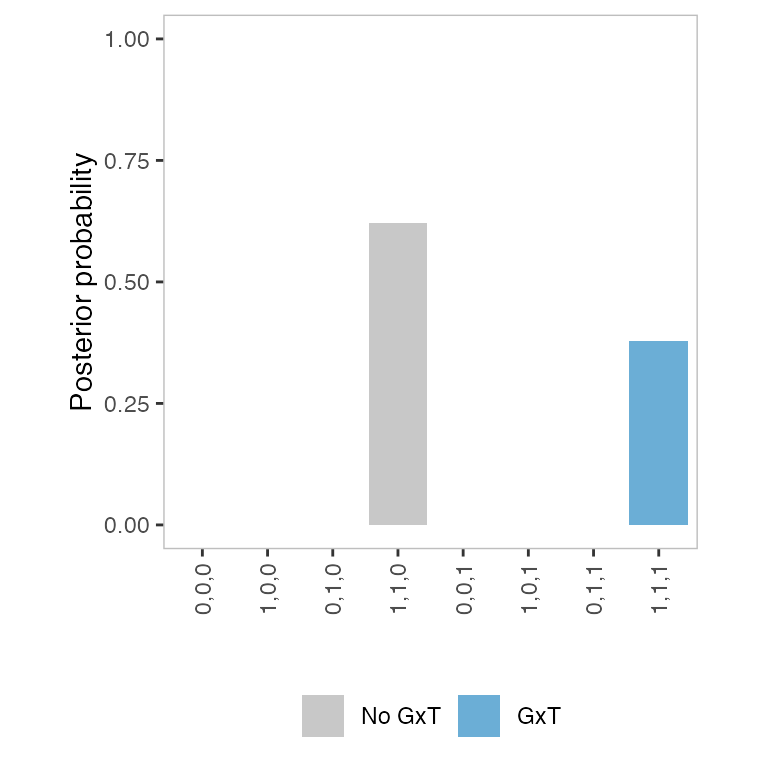

vignettes/classifygxt.Rmd
classifygxt.RmdThe ClassifyGxT software is an implementation of a Bayesian model selection (BMS) framework for classifying GxT interactions. The method was developed primarily for molecular count phenotypes, such as RNA-seq and ATAC-seq data, although it can be used for other types of phenotypes.
We first show the minimal steps to run ClassifyGxT. We assume that
data is a list object, as described in Input
data. See Performing
BMS for setting hyperparameter values.
For each feature-SNP pair, a list object containing the following elements needs to be generated:
y: A vector of length \(n\) containing preprocessed molecular count
phenotypes, where \(n\) is the number
of samples. See Data
preprocessing below for preprocessing.g: A vector of length \(n\) containing genotypes coded as \({0, 1, 2}\) to represent the number of
minor (alternative) alleles or the imputation-based allelic dosage in
\([0, 2]\).t: A vector of indicator variables for the
treatment.subject: An optional character or numeric vector
corresponding to the subjects. This is necessary when the model includes
donor or polygenic (kinship) random effects.feat.id: An optional character string representing the
feature.snp.id: An optional character string representing the
SNP.Note that the samples must be in the same order in the
y, g, t, and subject
elements and that the list can contain additional elements.
For molecular count phenotypes, the raw count data from sequencing experiments can be processed as follows:
Note that ClassifyGxT currently does not accommodate covariates other than the donor or polygenic random effects. Other covariates need to be regressed out prior to performing BMS (step 7). See Including covariates for details. For determining the number of PCs, see Matoba et al. (2024).
In this section, we simulate data using make_data(). The
simulated data will have the same format as discussed in the previous
section and will be used for demonstrating how to run BMS in the next
sections. For simplicity, we omit random effects. See the function
documentation (?make_data) for how to include random
effects.
We first specify the number of feature-SNP pairs for each of the eight models.
(model.name <- get_model_names())
#> [1] "0,0,0" "1,0,0" "0,1,0" "1,1,0" "0,0,1" "1,0,1" "0,1,1" "1,1,1"For this demonstration, we only make data for 10 pairs for each model.
num <- rep(10, 8)
names(num) <- model.name
num
#> 0,0,0 1,0,0 0,1,0 1,1,0 0,0,1 1,0,1 0,1,1 1,1,1
#> 10 10 10 10 10 10 10 10With this specification, the output will be a list of 80 lists. Each
of the lists corresponds to each feature-SNP pair. The first ten lists
are based on "0,0,0", the next ten are based on
"1,0,0", and so forth.
The genotype, treatment, and interaction effects will be drawn from Normal distributions with a zero mean and user-specified standard deviations. These values represent “typical” magnitudes of the effects. We specify standard deviations of the effects as follows.
sd.g <- 1.5 # genotype
sd.t <- 2.0 # treatment
sd.gxt <- 1.0 # interaction
sd <- c(sd.g, sd.t, sd.gxt)Note that the residual error standard deviation \(\sigma\), which represents a typical magnitude of noise, is set to 1 by default.
The following code generates a data frame specifying the mapping between samples, subjects, and treatment conditions.
n.sub <- 80 # number of subjects
anno <- data.frame(
subject=rep(seq_len(n.sub), each=2),
condition=rep(c(0, 1), times=n.sub))
head(anno)
#> subject condition
#> 1 1 0
#> 2 1 1
#> 3 2 0
#> 4 2 1
#> 5 3 0
#> 6 3 1Now we can generate fake data using make_data().
data.list <- make_data(
anno=anno, fn="nonlinear",
num=num, sd=sd)In this section, we perform BMS using do_bms(). For
simplicity, we do not model random effects. See Including
random effects below for how to include random effects.
We first specify the “model prior.” Note that this is an optional argument and that, by default, a uniform prior is used. This specification reflects a prior belief that all models are equally likely. Here, we explicitly specify the default model prior for demonstration purposes.
p.m <- rep(1/8, 8)We also specify the “effect prior” by choosing the values of the \(\phi_g\), \(\phi_t\), and \(\phi_{g \times t}\) hyperparameters, which correspond to the genotype, treatment, and GxT interaction effects, respectively. The hyperparameters represent our prior beliefs about the effects relative to the residual error standard deviation (noise). Specifically, we place priors, \[\begin{equation} \beta_g \sim \mathrm{N}(0, \phi_g^2 \sigma^2), \quad \beta_t \sim \mathrm{N}(0, \phi_t^2 \sigma^2), \quad \beta_{g \times t} \sim \mathrm{N}(0, \phi_{g \times t}^2 \sigma^2). \end{equation}\] In practice, we recommend optimizing the values via an empirical Bayes approach (see Optimizing the effect prior hyperparameters below). Here, we set them to the same values as the effect standard deviations in the data-generating models. This is a reasonable choice since we set the residual error standard deviation to 1 when generating the data.
phi.g <- 1.5 # genotype
phi.t <- 2.0 # treatment
phi.gxt <- 1.0 # interaction
phi <- c(phi.g, phi.t, phi.gxt)The following code performs BMS for the 71st data using
do_bms() with nonlinear regression
(fn="nonlinear"). Recall that the 71-80th data were
generated based on the eighth model, "1,1,1" (see Generating
data above). The method input argument must be set to
either "mcmc.bs", which represents Markov Chain Monte Carlo
(MCMC) followed by bridge sampling, or "map.lap", which
represents MAP estimation followed by Laplace approximation. Although
the latter method can be orders of magnitude faster, we recommend using
"mcmc.bs" for the final results, if possible, since it is
not straightforward to obtain error bounds for Laplace
approximation.
k <- 71
data <- data.list[[k]]
res <- do_bms(
data=data, p.m=p.m, phi=phi,
fn="nonlinear", method="map.lap")This returns a list object containing the following elements.
names(res)
#> [1] "fn" "ranef" "rint" "p.m"
#> [5] "seed" "ln.p.y.given.m" "ln.p.y" "p.m.given.y"
#> [9] "optim.list"fn - A character string specifying the function.ranef - A logical.rint - A logical as to whether the phenotypes have been
RINT-transformed.p.m - A vector of hyperparameters of the model
prior.seed - A integer specifying a seed fo RNG.ln.p.y.given.m - A named vector of the log marginal
likelihood given each model. If method is set to "map.lap",
the value is shifted by a constant.ln.p.y - A scalar value of the log marginal likelihood.
If method is set to "map.lap", the value is shifted by a
constant.p.m.given.y - A named vector of posterior probability
of the models.optim.list - A list of outputs from the optim function
from the stat package containing MAP estimates and Hessian. This element
is included only when method is set to "map.lap".See the function documentation (?do_bms) for more
details.
For multiple feature-SNP pairs, we recommend processing the data in batches using a workflow such as Snakemake. Within a batch, BMS can be performed in serial or parallel processes. For a moderate number of feature-SNP pairs, the following code can be used.
res.list <- lapply(
X=data.list, FUN=do_bms, p.m=p.m, phi=phi,
fn="nonlinear", method="map.lap")We can extract the posterior probability of the model as follows.
(pp <- get_pp(res))
#> 0,0,0 1,0,0 0,1,0 1,1,0 0,0,1 1,0,1
#> 2.381904e-31 3.102070e-13 1.859044e-25 6.219652e-01 6.612267e-19 5.423350e-12
#> 0,1,1 1,1,1
#> 3.940914e-14 3.780348e-01Note that, in this particular example, the highest posterior
probability is assigned to the fourth model "1,1,0", even
though the data-generating model is “1,1,1”. However, we
will see that BMS tends to choose the correct models across multiple
feature-SNP pairs (Heatmap
of the posterior probability of the models below).
The following code can be used to extract the posterior probability from a list object storing results for multiple feature-SNP pairs.
pp.mat <- sapply(X=res.list, FUN=get_pp)In this case, the output is a matrix that contains rows and columns corresponding to the models and the feature-SNP pairs, respectively.
In molecular QTL analyses on experimental data, it is important to control for confounding factors, such as molecular phenotype PCs and PEER factors to avoid spurious associations. We recommend identifying PCs according to the procedure described in Data preprocessing (steps 1 - 6). For computational reasons, ClassifyGxT does not currently accommodate covariates other than the donor or polygenic random effects. The fixed-effect covariates need to be regressed out prior to performing BMS as in Matoba et al. (2024). See step 7 in Data preprocessing. Note that we do not typically consider fixed-effect covariates in simulation experiments.
In analyses of experimental data, it is ofen desirable to include
random effects in the model. To include donor random effects, we first
need to run get_tu_lambda().
tu.lambda <- get_tu_lambda(data)We then use the output as input when running
do_bms().
res.ranef <- do_bms(
data=data, p.m=p.m, phi=phi,
fn="nonlinear", method="map.lap",
tu.lambda=tu.lambda)We can also include polygenic random effects rather than donor random
effects to accout for the genetic relatedness and popuplation structure.
See the function documentation (?get_tu_lambda) for
details.
We recommend visually inspecting the model fit by generating scatter
plots, which we call a “GP” plot, for each feature-SNP pair (or SNP). To
make a GP plot, we first create a list of data frames using
format_gp().
gp.plot <- format_gp(data=data, fit=res)We then create a ggplot2 object using
make_gp_plot(). The appearance of the plot can be modified
as usual.
p1 <- make_gp_plot(gp=gp.plot)
p1It is also useful to generate a barplot of posterior probability,
which we call a “PP” plot. To make a PP plot, we first create a data
frame using format_pp().
pp.plot <- format_pp(fit=res)We then create a ggplot2 object using
make_pp_plot(). The appearance of the plot can be modified
as usual.
p2 <- make_pp_plot(pp=pp.plot)
p2
We can generate a heatmap to visualize posterior probability across
multiple feature-SNP pairs using make_heatmap(). Note that
we transpose the matrix using t() in the following
code.
p3 <- make_heatmap(t(pp.mat))
p3 + theme(legend.position="bottom",
legend.title=element_blank())As expected, we see that the highest probability tends to be assigned
to the correct (i.e., data-generating) model. That is, the MAP model
tends to be "0,0,0" for the first ten feature-SNP pairs in
the left-most columns, "1,0,0" for the 11-20th pairs, and
so forth.
We recommend optimizing the effect prior hyperparmeters by an
empirical Bayes approach. In this approach, we obtain the \(\phi_g\), \(\phi_t\), and \(\phi_{g \times t}\) hyperparameter values
that maximize the sum of \(\log\)-transformed marginal likelihood
across all feature-SNP pairs that are being analyzed. The most
conceptually straightforward method is to perform a grid search (see our
manuscript for details). We recommend using a workflow such as Snakemake. For
faster computation, we use MAP estimation and Laplace approximation,
setting method="map.lap" (see Performing
BMS above). From the BMS result for a feature-SNP pair, the \(\log\) of the marginal likelihood can be
extracted as follows.
(ln.p.y <- res$ln.p.y)
#> [1] -257.3321Since error bounds for Laplace approximation are not easily obtained, we recommend rerunning MCMC and bridge sampling with optimal hyperparameter values for the final result.
sessionInfo()
#> R version 4.1.2 (2021-11-01)
#> Platform: x86_64-apple-darwin17.0 (64-bit)
#> Running under: macOS Big Sur 10.16
#>
#> Matrix products: default
#> BLAS: /Library/Frameworks/R.framework/Versions/4.1/Resources/lib/libRblas.0.dylib
#> LAPACK: /Library/Frameworks/R.framework/Versions/4.1/Resources/lib/libRlapack.dylib
#>
#> locale:
#> [1] en_US.UTF-8/en_US.UTF-8/en_US.UTF-8/C/en_US.UTF-8/en_US.UTF-8
#>
#> attached base packages:
#> [1] stats graphics grDevices utils datasets methods base
#>
#> other attached packages:
#> [1] classifygxt_0.1.0 ggplot2_3.4.4
#>
#> loaded via a namespace (and not attached):
#> [1] matrixStats_0.61.0 fs_1.5.0 fontquiver_0.2.1
#> [4] rstan_2.21.5 tools_4.1.2 bslib_0.3.0
#> [7] utf8_1.2.2 R6_2.5.1 DBI_1.1.1
#> [10] colorspace_2.0-2 withr_3.0.0 tidyselect_1.1.1
#> [13] gridExtra_2.3 prettyunits_1.1.1 processx_3.8.1
#> [16] Brobdingnag_1.2-7 curl_4.3.2 compiler_4.1.2
#> [19] extrafontdb_1.0 textshaping_0.3.6 cli_3.6.1
#> [22] desc_1.4.3 fontBitstreamVera_0.1.1 labeling_0.4.2
#> [25] sass_0.4.6 scales_1.3.0 mvtnorm_1.1-3
#> [28] callr_3.7.6 pkgdown_2.0.9 systemfonts_1.0.4
#> [31] stringr_1.4.0 digest_0.6.27 StanHeaders_2.21.0-7
#> [34] rmarkdown_2.11 gfonts_0.2.0 pkgconfig_2.0.3
#> [37] htmltools_0.5.5 extrafont_0.19 highr_0.9
#> [40] fastmap_1.1.1 htmlwidgets_1.5.4 rlang_1.1.1
#> [43] rstudioapi_0.13 httpcode_0.3.0 shiny_1.7.1
#> [46] farver_2.1.0 jquerylib_0.1.4 generics_0.1.2
#> [49] jsonlite_1.7.2 dplyr_1.0.10 inline_0.3.19
#> [52] magrittr_2.0.1 loo_2.5.1 Matrix_1.3-4
#> [55] Rcpp_1.0.7 munsell_0.5.0 fansi_0.5.0
#> [58] gdtools_0.3.3 viridis_0.6.1 lifecycle_1.0.4
#> [61] stringi_1.7.4 yaml_2.2.1 pkgbuild_1.2.0
#> [64] grid_4.1.2 hrbrthemes_0.8.0 parallel_4.1.2
#> [67] promises_1.2.0.1 crayon_1.5.1 lattice_0.20-45
#> [70] knitr_1.34 ps_1.6.0 pillar_1.9.0
#> [73] codetools_0.2-18 stats4_4.1.2 rstantools_2.4.0
#> [76] crul_1.2.0 glue_1.6.2 evaluate_0.14
#> [79] fontLiberation_0.1.0 RcppParallel_5.1.5 vctrs_0.6.2
#> [82] httpuv_1.6.3 Rttf2pt1_1.3.12 gtable_0.3.0
#> [85] purrr_1.0.1 assertthat_0.2.1 cachem_1.0.6
#> [88] xfun_0.26 mime_0.11 xtable_1.8-4
#> [91] coda_0.19-4 later_1.3.0 ragg_1.2.5
#> [94] viridisLite_0.4.0 tibble_3.2.1 memoise_2.0.1
#> [97] ellipsis_0.3.2 bridgesampling_1.1-2